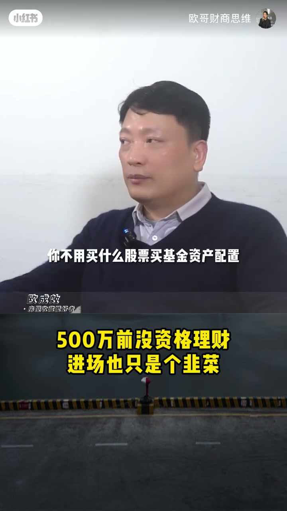
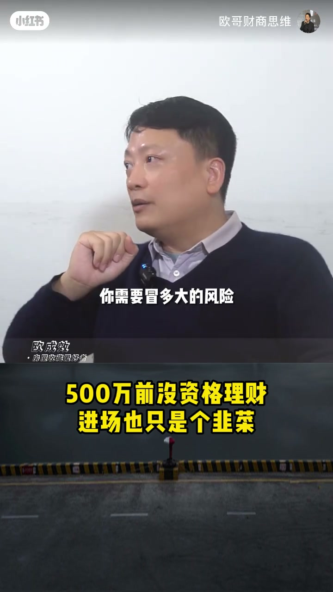
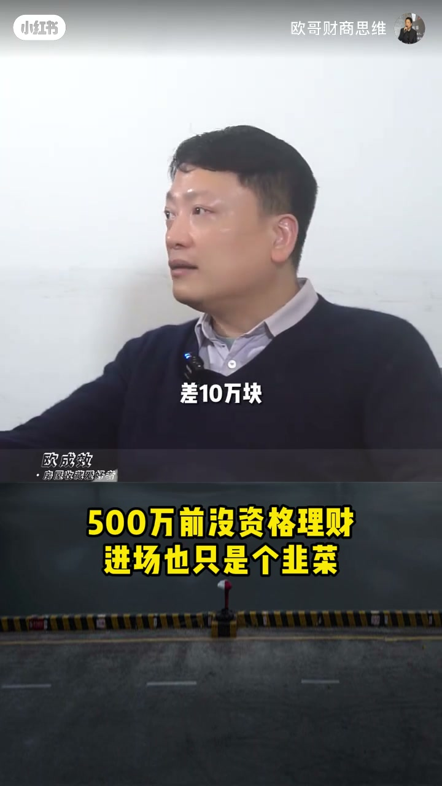
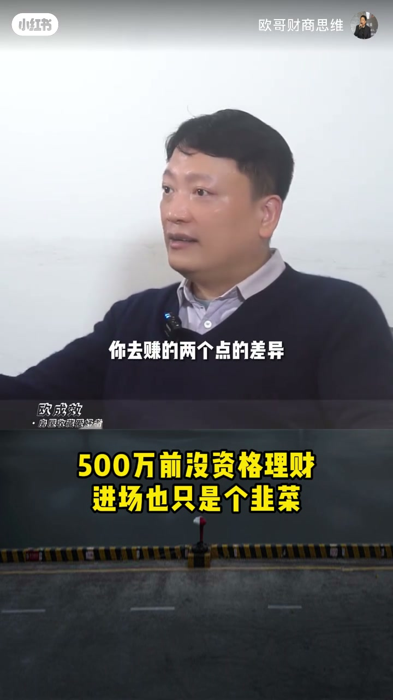
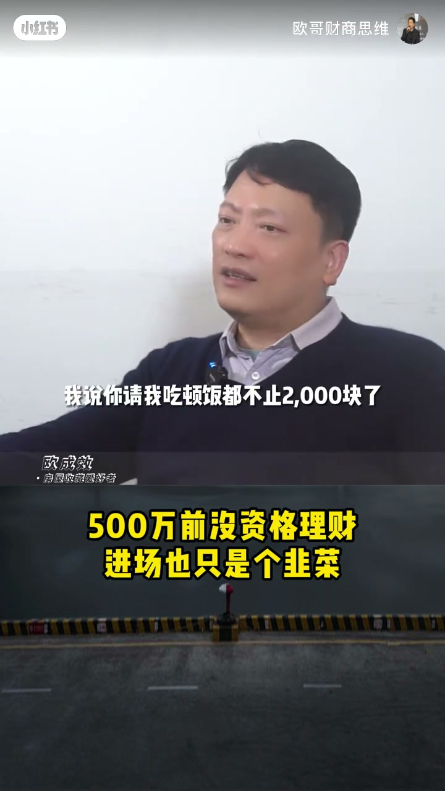

内容要点
一段 1 分半的理财观点视频（讲者自嘲这句话会得罪所有财商博主）：500万之前你不需要理财，纯定期就可以了，买股票、买基金、做资产配置、上理财课，一切都不需要。讲者算了笔账——中国市场无风险收益只有 2.3%-2.4% 左右，而顶级的基金经理和最差的基金经理长线收益也就差两个点，500万的两个点不过是 10 万块；与其花心思研究理财，不如把精力投入本职工作、升职加薪。最后给出分界线：理财从 500 万开始，有 5000 万一年能多赚 100 万才需要精通。
知识结构
不用买股票基金、做资产配置、上理财课，一切都不需要。目前中国市场无风险收益大概 2.3%-2.4%（不到2.5%），从 2.3% 做到 4.3% 要冒很大的风险——顶级的基金经理和最差的基金经理，长线收益也就差两个点。
500万的两个点是 10 万块；用心理财、运气还不错的人，和不理财只存银行的人，一年最多也就差 10 万。有这个心思不如好好上班、升职加薪。理财很花精力，整天研究它就没心思画图、写报告、做PPT了。
500万之前赚两个点的差异毫无意义；有 5000 万，一年能多赚 100 万，那才需要精通。大部分年轻人只有 10 万块，请吃顿饭都不值 2000，别谈理财。
500万以下不需要理财：纯定期就行，用心理财和只存银行一年最多差 10 万块，精力该留给本职工作；理财从 500 万开始，5000 万级别才值得精通。
00:00-00:38500万以下：纯定期就够了
开场就是结论：500万之前你不需要理财，纯定期就可以了。因为钱太少——买股票、买基金、做资产配置、上理财课，买各种各样奇奇怪怪的怪异产品，一切都不需要。
论据是无风险收益：目前整个中国市场无风险收益大概 2.5% 都不到一点，2.3%、2.4% 的样子。从 2.3% 的基础上加两个点做到 4.3%，你需要冒很大的风险。
两个点是很大的数字：那种顶级的基金经理跟最差的基金经理，长线收益率可能就差两个点。也就是说，即便再用心，普通人的收益空间也就被锁在这两个点里。


00:39-01:28两个点只差10万块，精力留给主业
算一笔账：500万的两个点是多少钱？10万块。理财非常非常用心、运气还不错的人，跟一个完全不理财只存银行的人，他们的理财收益最多也就差 10 万块。
讲者反问：你有这个心思，去做你的本职工作、好好上班、升职加薪，一年 10 万块算不到吗？何况理财是要花精力的，整天研究这个东西，就没心思去画图、去写报告、去做PPT了。
结论与分界：500万之前赚两个点赚 10 万块毫无意义，理财从 500 万开始；有 5000 万，一年就可以多赚 100 万，那才需要精通。至于只有 10 万块的年轻人，请吃顿饭都不值 2000 块，别谈理财。



完整转录（71段）
以下文本由 Whisper medium 模型自动转录，可能存在少量识别误差，已尽可能修正。
500万之前你不需要理财
纯定期就可以了
因为钱太少
得罪所有的财商博主
你不用买什么股票
买基金 资产配置
上理财课 学堂课
买什么各种各样奇奇怪怪的
这种怪异的产品
一切都不需要
就我们目前整个中国市场
无风险收益的比例
大概是2.5%
2.5%都不到一点
2.3% 2.4%的样子
那我从2.3%的基础上
加两个点
我做到4.3%
你需要冒多大的风险
两个点是很大的数字
就是说那种顶级的基金经理
跟最差的基金经理
它长线收益率
可能就差两个点
500万的两个点是多少钱
10万块
那我可以这么说吧
理财非常非常用心
撒起运气还不错的人
跟一个完全不理财
只存银行的人
他们的理财收益
最多差多少
差10万块
你有这个心思
你去做你的本职工作
你好好上班
你升职加薪
你一年10万块算不到吗
理财也是要花精力的
你知道吗
你一个人等天研究这个东西
你就没有心思去画图子啊
去写报告啊
去做PPT了
人的精力在500万之前
你去赚个两个点的差异
赚10万块
毫无意义的
理财从500万开始
你要是有个5000万
一年就可以多赚100万
这个就很大钱了
那你就需要精通
但是你大部分的年轻人
他跟我说
欧老师
我现在有10万块钱
请问我怎么理财
怎么享受最高的理财收益
怎么样让我享受富力的狂飙
吃吧
我猜着
我说你请我吃顿饭
都不值2000块了
都已经
不要不要
500万以前不用理财
年轻人10万块钱
还跟我说理财呢
明天下ák